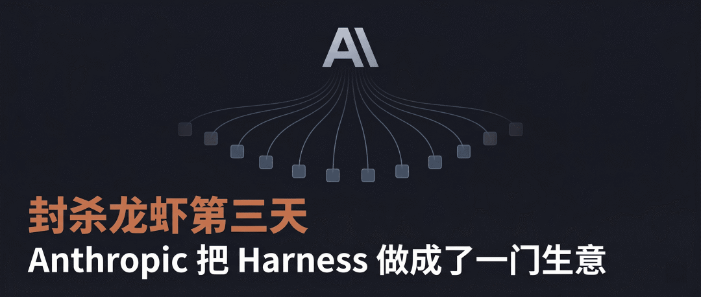

Terraform 创始人写了篇博客。两个月后，整个 AI 圈都在讨论他提出的一个词。
这个词叫「Harness Engineering」。

2 月 5 日，Mitchell Hashimoto 在个人网站发布了一篇文章。标题很普通，「My AI Adoption Journey」，我的 AI 之旅。
6 天后，OpenAI 官方工程博客发了一篇文章，标题直接用了「Harness Engineering」。紧接着 Anthropic 也跟进了。软件工程教父 Martin Fowler 写了深度分析。各大 AI 社区同步讨论。
一个人的博客，变成了一个行业范式。
你可能没有听过 Mitchell Hashimoto 这位大佬的名字，但开发者大概率都用过他做的东西。
Terraform、Vagrant、Vault、Consul，全球开发者每天都在用的基础设施，全部出自同一家公司。他和搭档 Armon Dadgar 在 2012 年创立了 HashiCorp。

这里还有一个小故事。在 HashiCorp 只有 3 个人的时候，VMware 曾出价 2000 万美元收购。Hashimoto 反手开出了 1 亿美元的价。VMware 董事会差一票否决了。Mitchell Hashimoto 后来说，如果那次被收购了，Terraform 大概率不会存在。
2024 年，IBM 以 64 亿美元收购了 HashiCorp。
离开公司后，他用 Zig 语言从零写了一个终端模拟器 Ghostty，发布不到两年就成了开发者圈最火的终端工具之一，Ubuntu 26.04 直接收录进了官方仓库。今年 3 月，Vercel 邀请他加入董事会。
这不是一个追热点的人。这是一个造工具的人。
博客开头他专门写了一句话。
「这篇文章完全是我手写的。我讨厌自己必须声明这一点。」
一个正在全力使用 AI 的顶级工程师，在写关于 AI 的文章时，选择了纯手写。
然后他讲述了自己从 AI 怀疑论者变成 AI 重度用户的六个阶段。没有行业黑话，没有融资宣传，纯粹以一个工程师的视角拆解自己的方法论。

Django 框架联合创始人 Simon Willison 说这篇文章里有很多「真正非传统的好建议」。
Hashimoto 的起点是放弃聊天窗口。
ChatGPT、Gemini 这类聊天界面，日常很有用，但拿来写代码效率极低。来回复制粘贴代码和报错信息，太慢了。
不过他也承认，自己第一次被 AI 震到，确实是在聊天窗口。他把 Zed 编辑器命令面板的截图丢进 Gemini，让它用 SwiftUI 复现。几秒钟就出来了，效果好到可以直接拿来用。Ghostty macOS 版今天的命令面板，就是在 Gemini 那版基础上微调的。
但这种体验没法稳定复现。他的结论是，「要获得真正的生产力提升，必须用 Agent。能自己读文件、跑程序、发请求的 AI，不是只能聊天的 AI。」
接下来他开始用 Claude Code，第一印象不太好。每次都要帮 Agent 收拾残局，改来改去比自己写还费劲。
很多人到这一步就放弃了。他没有。
每一个开发任务，先自己手动完成一遍，提交代码。然后让 Agent 重新做同样的任务，不让它看自己写的答案。
同样的活，干两遍。
他说这个过程「极其痛苦」（excruciating），严重拖慢正常进度。但他之前用非 AI 工具的经验告诉他，一开始不顺手太正常了。不把自己逼到极限，就没资格下结论。
这样做了一段时间后，他发现了门道。任务必须拆分为小颗粒，不要试图让 Agent 一次性完成一整个复杂任务。需求如果模糊，可以先让 Agent 出个规划，确认好了再让它执行。
任务完成后，如果你让 Agent 自己检查结果，它大概率能自己发现并修正错误。

更重要的是，他搞清楚了 Agent 的能力边界。知道什么时候不用 Agent，这本身就是一种效率提升。
到这一步，Hashimoto 觉得用 Agent 和自己手写代码速度差不多了。但没觉得更快（因为大多数时间需要盯着 Agent 干活）。
于是他开始了一个新打法。每天下班前 30 分钟，不写代码了，专门用来启动 Agent。
逻辑很简单。与其在自己能干活的时间里让 Agent 帮忙，不如在自己本来就不干活的时间里让它动起来。重点是把原本闲置的时间也利用起来。
他发现有几类任务特别适合这种模式。
比如让 Agent 搜索某个语言里所有符合特定开源协议的库，给每个库写一份分析报告，优缺点、开发活跃度、社区评价。这种活自己做可能要一整天，Agent 半小时就搞定了。再比如让 Agent 用 GitHub CLI 批量扫描 Issue 和 PR，打标签、写摘要。划重点，别让 Agent 回复任何人，只让它自己写报告。
下午最后半小时，换来了第二天早上一坐下就有东西可以接着干。

再往后，他对 Agent 能力边界心里有数了。哪些活能放心交给它，哪些不行，很清楚。
他开始把这些活全丢给后台 Agent，自己去做真正想做的深度思考型工作。
他在这里给了一条反直觉的建议。
「关掉 Agent 的通知提醒。」
你在休息间隙去看一眼 Agent 的进度就行了，让 Agent 来打断你不值当。控制权应该在你手上。
他还提到了 Anthropic 那篇关于「技能退化」的文章。把活都交给 Agent，人类会不会变笨？他的应对方法是，「用 Agent 做那些自己不想做的活，自己专注在真正有成长性的任务上。」
到这一步，他说「不可能回去了」。终于可以把时间花在自己真正喜欢的事情上了。
我们前几天在聊 Anthropic Managed Agents 的时候提过「Harness Engineering」这个概念。今天从源头讲起。
Hashimoto 的观察是，Agent 最高效的状态是一次就做对。退一步，做完只需要微调。要做到这一点，最稳妥的方法是给 Agent 一套又快又准的反馈工具，让它在犯错的瞬间就知道自己错了。
他给这套方法论起了个名字。
「每次发现 Agent 犯了一个错，就花时间做一个工程化的方案，让它永远不再犯同样的错。这就是 Harness Engineering。」
Harness 这个词，原意是马具，套在马身上的缰绳、马鞍和嚼子。Agent 是牛马，Harness 就是缰绳。马力足够大，但得有缰绳才能往对的方向跑。
放大来看。Prompt Engineering 优化的是「怎么跟 AI 说话」。Context Engineering 优化的是「给 AI 什么信息」。Harness Engineering 优化的是「AI 在什么样的系统里干活」。前两层管的是单次对话的质量，第三层负责 Agent 能不能连续工作几个小时不翻车。
他自己在 Ghostty 项目里维护了一个 AGENTS.md 文件，里面每一行都是针对 Agent 某个具体坏习惯写的。比如 Agent 老是用错某个命令、找不到正确的 API，写一条规则就解决了。他说这个文件「几乎完全解决了所有列出的问题」。
另一个方向是写工具脚本。截图脚本、过滤测试脚本、验证脚本，让 Agent 不光能干活，还能验收自己的活。
不改模型，只调整模型外面的运行环境。模型升级了，harness 自动受益。模型不变，harness 也能大幅提高 Agent 的表现。怎么都不亏。

Hashimoto 在原文里还特地说了一句，「我不确定这个叫法有没有被业界广泛采用。如果已经有了，我乐意用现成的。」
后来的事情证明，业界直接用了他的。
他现在的状态是，尽量保持随时有一个 Agent 在后台跑。
如果没有 Agent 在运行，他会问自己一句话，「现在有没有什么事可以让 Agent 帮我做？」
他喜欢配合慢速模型跑深度任务。Amp 的 deep mode 本质上是 GPT-5.2-Codex，一次改动经常要 30 分钟以上，但结果通常很好。
目前大概能做到工作日 10% 到 20% 的时间有后台 Agent 在跑。他说这个比例还在提高。但他也表示，不是为了跑 Agent 而跑。只在确实有价值的任务上启动。
最后，Hashimoto 写了两段话。
「我是一个软件手艺人，写代码纯粹因为热爱。」
「我不在任何 AI 公司工作，不投资，不当顾问。」
2026 年 AI 领域最出圈的概念，出自一个局外人。一个造工具的匠人。
参考链接
My AI Adoption Journey Mitchell Hashimoto，2026 年 2 月 5 日。链接：https://mitchellh.com/writing/my-ai-adoption-journey。点击「阅读原文」查看。
我是木易，Top2 + 美国 Top10 CS 硕，现在是 AI 产品经理。
关注「AI信息Gap」，让 AI 成为你的外挂。
